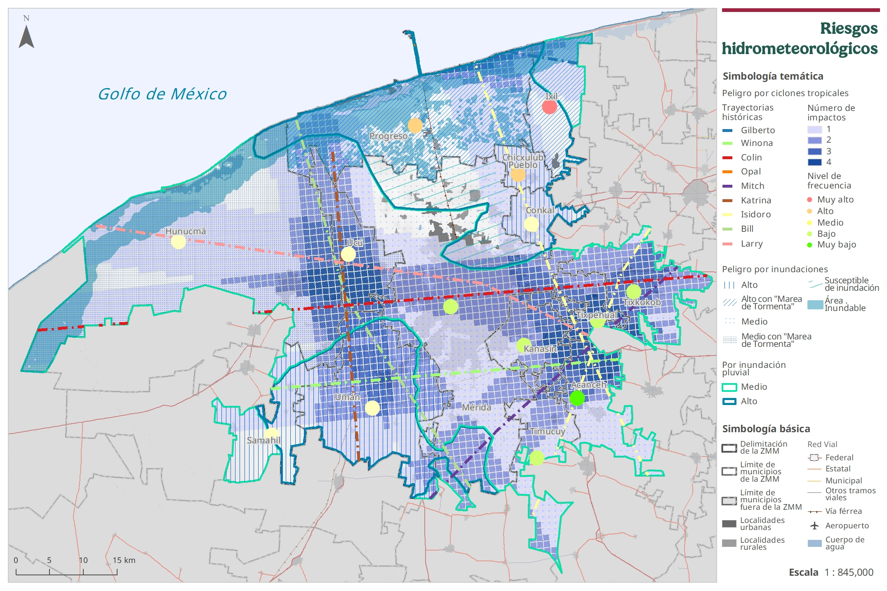
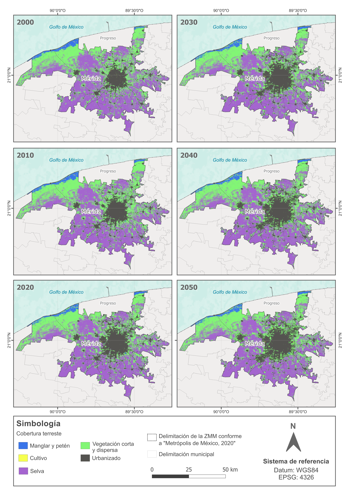
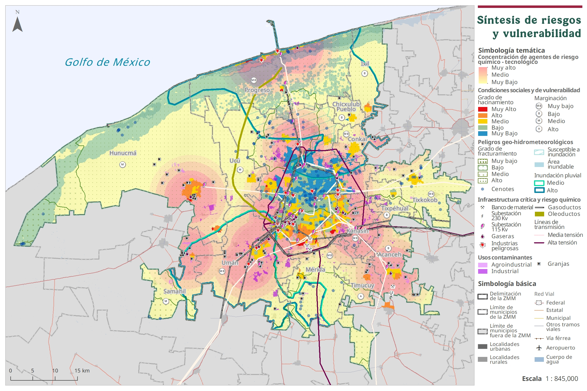
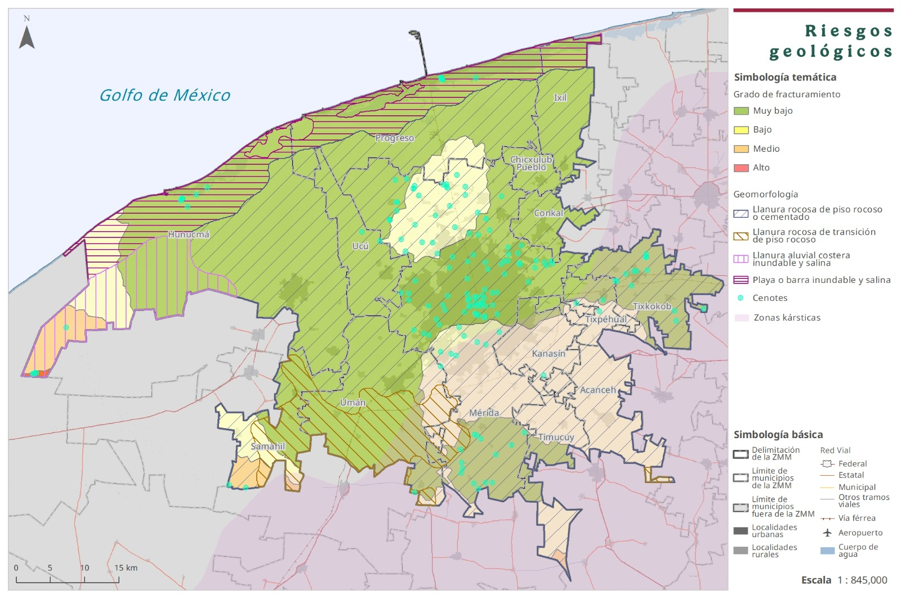
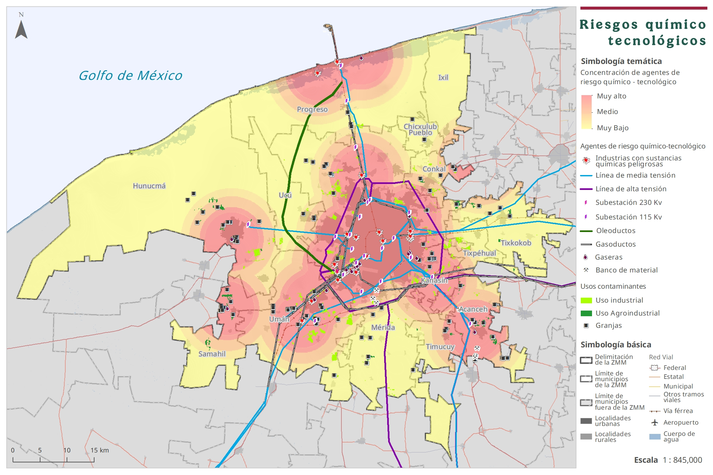
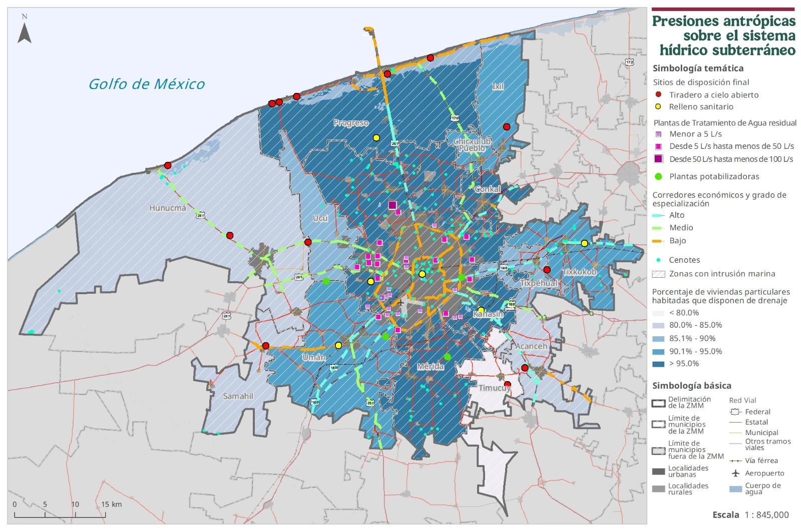

Riesgos hidrometeorológicos
Exposición a ciclones tropicales, inundaciones pluviales, marea de tormenta y zonas susceptibles de anegamiento.
Diagnóstico Territorial · Gestión del agua · Riesgos urbanos
Diagnóstico espacial para la gestión integral de riesgos, la resilencia urbana y la sosteniblidad hídrica.
habitantes proyectados a 2050
superficie urbana proyectada a 2050
sobre el acuífero kárstico regional
escenario climático crítico

Expansión urbana y cambio territorial 2000–2050
Atlas digital
A continuación se presentan algunos productos cartográficos elaborados para apoyar procesos de planeación territorial, gestión integral de riesgos, resiliencia climática y sostenibilidad hídrica en la Zona Metropolitana de Mérida.
Gestión integral de riesgos
El mapa integra condiciones de amenaza, exposición, vulnerabilidad social e infraestructura crítica para identificar zonas prioritarias de intervención territorial.


Exposición a ciclones tropicales, inundaciones pluviales, marea de tormenta y zonas susceptibles de anegamiento.

Identificación de zonas kársticas, fracturamiento, cenotes, llanuras inundables y áreas con susceptibilidad territorial.

Concentración de infraestructura energética, gasoductos, oleoductos, industrias peligrosas y usos contaminantes.

Localización de las zonas con mayor impacto humano sobre el acuífero, como la urbanización, agricultura intensiva o vertimientos.
DESARROLLO WEB
Visor geoespacial con capas temáticas de riesgos hidrometeorológicos, geológicos, químico-tecnológicos y presiones hídricas.
Abrir visor interactivoAquí se presentan productos cartográficos seleccionados con fines profesionales. Las bases de datos editables, capas institucionales, geodatabases y archivos técnicos sensibles no se comparten públicamente.